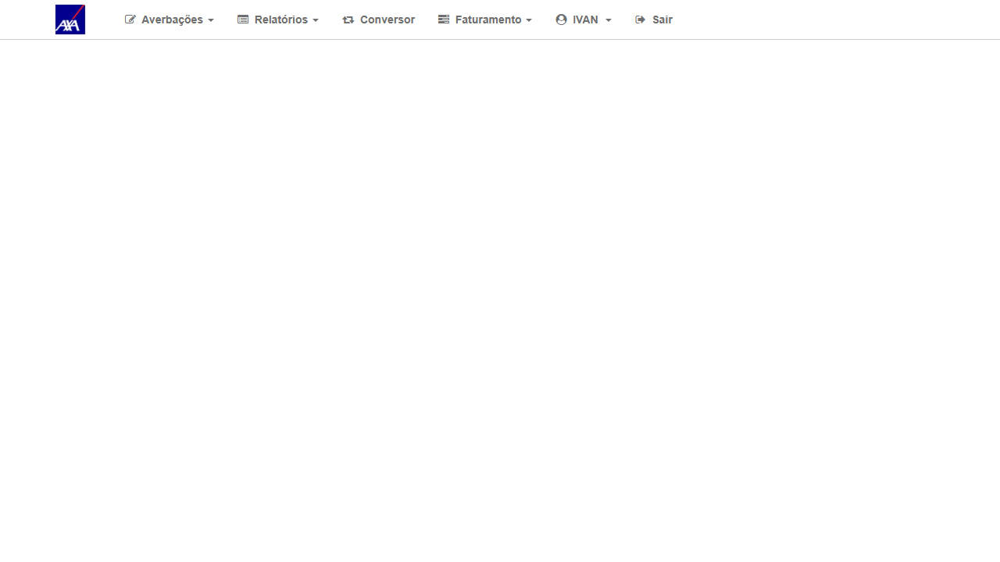
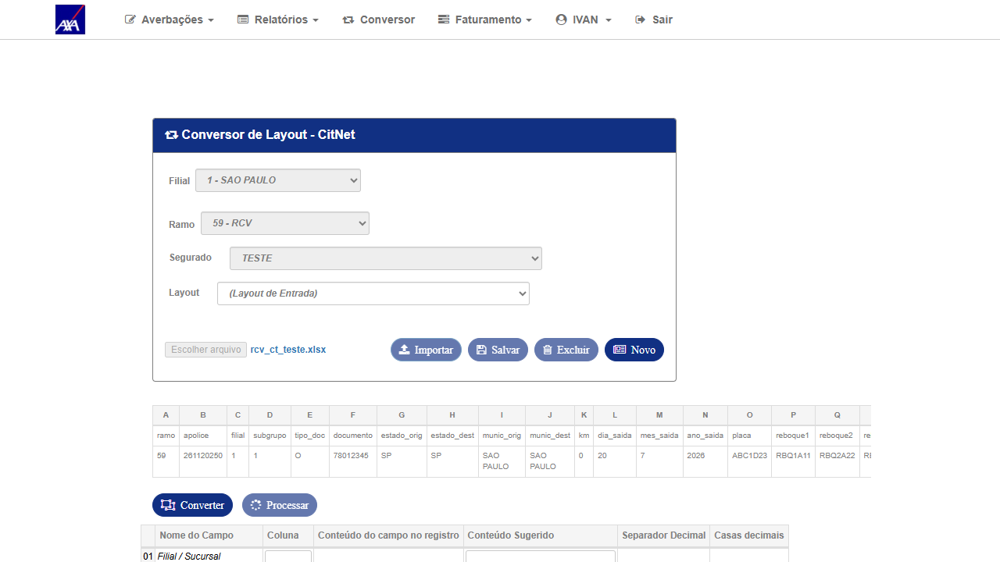
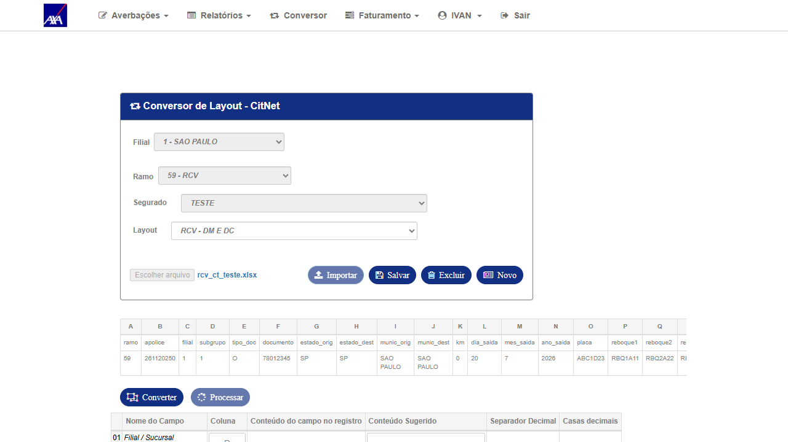
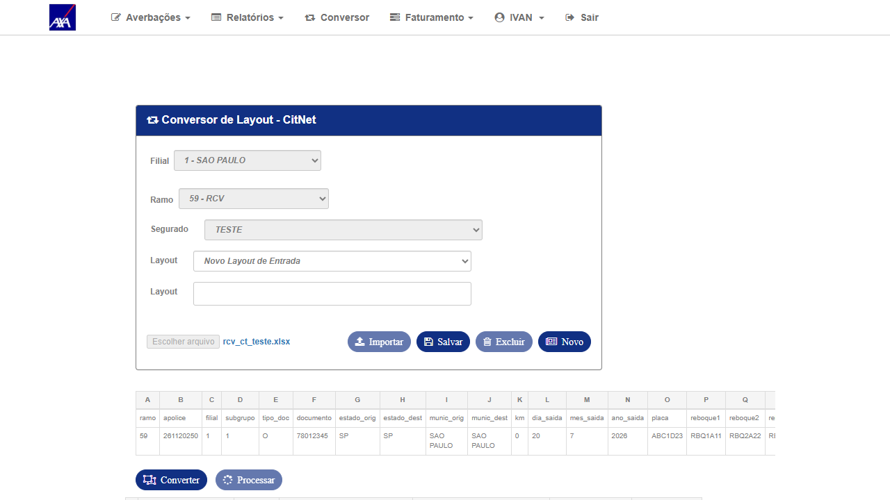
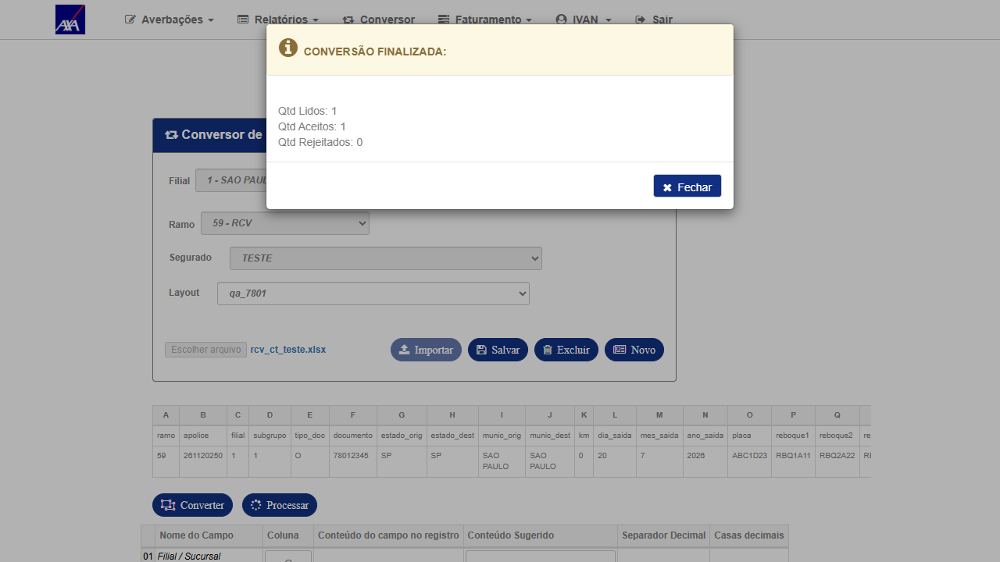
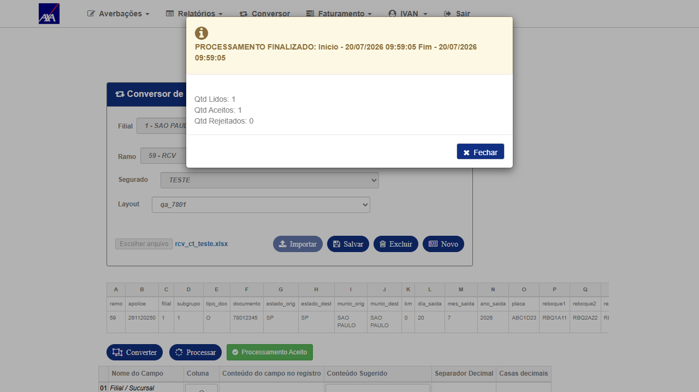
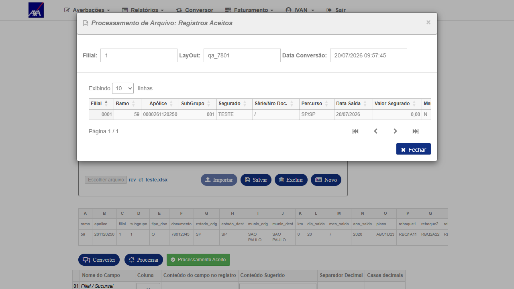

1. Descrição
Bug reportado: No Conversor do CITNET (AXA HML ALFA), depois de Importar um arquivo,
ao selecionar um Layout o grid de registros importados (
tbPlanilha) zerava (0 linhas),
o botão Importar era desabilitado e o Converter virava no-op (nenhuma requisição de rede) — deixando o
Processar permanentemente bloqueado. Na ordem inversa (Layout antes do Importar), os registros apareciam mas
o Converter acusava ATENÇÃO! Selecione um LayOut (o valor do layout era descartado pelo Importar).
Em nenhuma das ordens era possível ter registros + layout ativos ao mesmo tempo → o Conversor ficava inoperante.
Contexto: Achado de QA durante o reteste do BUG-7752 (fix do
Processar, CNPJ alfanumérico AXA),
em 15/07/2026. O #7801 bloqueou aquele reteste pela UI. Card filho do Epic #7283 e Related ao #7752.
Tags sem-gate2-po + sem-teams-notificacao → fluxo de sustentação (sem gate de Produtos, sem notificação Teams).
Ambiente: CITNET AXA HML ALFA ·
axa-hml-faturamento.nsseg.com.br/alfa/citnet/ (tela /Conversor/Conversor)
· Usuário interno (perfil INTERNO) — login direto no CITNET (o SSO do CITWEB retornava HTTP 500), sem selecionar filial ("Selecione...").
Root cause (análise do dev — Ivan): corrida de timing entre duas chamadas AJAX disparadas ao selecionar o Layout —
o re-import automático do arquivo (
LerPlanilhaUpLoad, que popula o grid) e o ConversorLayOut/ObterXPadrao
(carga do mapeamento do layout, cujo success executa $("#tbPlanilha").empty()). Quando o ObterXPadrao respondia
depois do re-import, ele esvaziava o grid recém-populado → 0 linhas → Converter no-op.
Fix: commit 610759e9 (PR #1845) em conversor.js — serializa as chamadas, garantindo que os registros
importados permaneçam no grid após o mapeamento do layout carregar.
Validação do dev: local (5 cenários, padrão antigo reproduz / padrão novo mantém o grid) e em HML real pós-deploy
(upload real → grid com 2 linhas → seleciona Layout "Novo Layout de Entrada" → grid mantém as 2 linhas).
2. Critérios de Aceite
- CA1 — Após Importar o arquivo e selecionar um Layout salvo existente, os registros importados permanecem no grid (
tbPlanilhanão zera). - CA2 — Após Importar e selecionar "Novo Layout de Entrada", os registros importados também permanecem no grid.
- CA3 — Com registros + layout ativos, o botão Converter executa a conversão (dispara requisição de rede, exibe contadores) e libera o Processar.
- CA4 — O Processar conclui o fluxo com no mínimo 1 registro aceito (Aceitos ≥ 1) — averbação efetivamente criada — sem o modal
Erro no processamento dos dados!, desbloqueando o fluxo que o #7801 impedia.
3. Pré-requisitos e Massa de Dados
⚠️ Massa a confirmar in loco no início da execução (Playwright MCP). Valores abaixo vêm do card (reprodução original)
e da validação do dev em HML — o Segurado de teste foi criado pelo dev em
tb_cli Filial 1 (base smt-hom-citweb-axa).
O arquivo de importação deve conter ao menos 1 linha válida (passa todas as validações do ramo) para garantir Aceitos ≥ 1 no Processar (CA4).
| Item | Valor | Observação |
|---|---|---|
| URL CITNET | axa-hml-faturamento.nsseg.com.br/alfa/citnet/ | Login direto (SSO CITWEB estava com HTTP 500) |
| Usuário | interno (perfil INTERNO) | Senha via .env (HML_AXA_CITNET_INTERNO_PASS) — login sem selecionar filial |
| Tela | Menu topo → Conversor (/Conversor/Conversor) | Navegação por clique |
| Filial | 1 — SÃO PAULO | Selecionada no próprio Conversor (#c_org_prd) |
| Ramo | 59 — RCV | #c_rmo usa valor composto 59;CIT-AVB-RCV |
| Segurado | ITAMAR PRADO (doc 79123025000132) ou 11324123412412341234 | Confirmar qual existe em tb_cli Filial 1 na execução |
| Layout | qa_rcv (salvo) · Novo Layout de Entrada | Cobrir os dois caminhos de seleção (CA1 e CA2) |
| Arquivo | rcv_ramo59_qa.xlsx (≥1 linha) | Gerar via openpyxl se não existir · confirmar linha inicial = 2 (pular cabeçalho) |
4. Escopo
In scope: comportamento do grid ao selecionar Layout (salvo e novo) após Importar; disparo do Converter; liberação e execução do Processar — no Conversor CITNET AXA, ramo 59 RCV.
Out of scope: regras de aceite/rejeição de averbação por CNPJ alfanumérico (escopo do #7752) — aqui só se valida que o Processar conclui, não os contadores de aceitos/rejeitados. Demais ramos/seguradoras do Conversor entram apenas como regressão amostral (CT-CNV-004).
Out of scope: regras de aceite/rejeição de averbação por CNPJ alfanumérico (escopo do #7752) — aqui só se valida que o Processar conclui, não os contadores de aceitos/rejeitados. Demais ramos/seguradoras do Conversor entram apenas como regressão amostral (CT-CNV-004).
5. Casos de Teste
🐛 Fix Verificado — grid retém registros e o fluxo Converter → Processar destrava
▶
CT-CNV-001
P1
Grid retém registros ao selecionar Layout salvo após Importar (CA1)
APROVADO
Tipo
Positivo — Verificação de fix (comportamento core do bug)
Pré-condições
- Acesso ao CITNET AXA HML ALFA com usuário
interno - Arquivo
rcv_ramo59_qa.xlsx(≥1 linha) e layout salvoqa_rcvdisponíveis
Passos
- Acessar
axa-hml-faturamento.nsseg.com.br/alfa/citnet/e fazer login com usuáriointerno(sem selecionar filial) - No menu superior, clicar em Conversor
- Selecionar Filial
1 — SÃO PAULO - Selecionar Ramo
59 — RCV - Selecionar o Segurado de teste
- Escolher o arquivo
rcv_ramo59_qa.xlsxe clicar em Importar → confirmar que o grid é populado com N linhas - No campo Layout, selecionar
qa_rcv(layout salvo) - Observar o grid
tbPlanilhaimediatamente após a seleção do layout - Capturar screenshot do grid
Resultado Esperado
✓ O grid mantém as N linhas importadas (não zera) após selecionar o layout salvo. O botão Converter fica disponível. (Antes do fix: grid ia a 0 linhas / Converter no-op.)
Resultado Obtido
✓ APROVADO — Após Importar o arquivo (grid
tbPlanilha com 2 linhas) e selecionar o Layout salvo RCV - DM E DC, o grid manteve as 2 linhas (verificado via tbPlanilha tbody tr = 2 após o AJAX). Antes do fix, o grid ia a 0. Botão Converter permaneceu habilitado. · Segurado TESTE · Filial 1 · Ramo 59 RCV · HML AXA alfa · 20/07/2026Evidências

EV0 — Login direto CITNET AXA (perfil interno)

EV1 — Após Importar: grid com 2 linhas (antes de selecionar o layout)

EV2 — Após selecionar Layout salvo: grid mantém as 2 linhas (fix)
▶
CT-CNV-002
P1
Grid retém registros ao selecionar "Novo Layout de Entrada" após Importar (CA2)
APROVADO
Tipo
Positivo — Segundo caminho de seleção de layout (cenário exato validado pelo dev em HML)
Pré-condições
- Mesmo ambiente/massa de CT-CNV-001
Passos
- No Conversor (Filial 1 · Ramo 59 RCV · Segurado), escolher o arquivo
rcv_ramo59_qa.xlsxe clicar em Importar (usar Novo antes, se vindo de outro teste) - Confirmar que o grid é populado com N linhas
- No campo Layout, selecionar "Novo Layout de Entrada"
- Observar o grid
tbPlanilhaapós a seleção - Capturar screenshot do grid
Resultado Esperado
✓ O grid mantém as N linhas importadas após selecionar "Novo Layout de Entrada"; o painel de novo layout é exibido para o mapeamento. (Cenário reproduzido com sucesso pelo dev em HML: 2 linhas mantidas.)
Resultado Obtido
✓ APROVADO — Com o grid populado (2 linhas), ao selecionar "Novo Layout de Entrada" o grid manteve as 2 linhas (
tbPlanilha tbody tr = 2) e o painel de mapeamento do novo layout foi exibido. É exatamente o cenário que o dev validou em HML. Nenhuma perda de registros pela corrida de timing. · HML AXA alfa · 20/07/2026Evidências

EV1 — "Novo Layout de Entrada": grid mantém as 2 linhas + painel de mapeamento aberto
▶
CT-CNV-003
P1
Converter dispara e libera o Processar (CA3)
APROVADO
Tipo
Positivo — Fluxo destravado pelo fix
Pré-condições
- CT-CNV-001 (ou 002) executado: grid com linhas + layout ativo
Passos
- Com o grid populado e layout ativo, clicar em Converter
- Se aparecer o modal "Informe a Linha Inicial", informar
2(pular cabeçalho) e confirmar - Observar a requisição de rede e a mensagem/contadores de resultado
- Verificar se o botão Processar ficou habilitado
- Capturar screenshot do resultado da conversão
Resultado Esperado
✓ O Converter dispara a requisição (
POST /Conversor/Converter → HTTP 200) e exibe "CONVERSÃO FINALIZADA" com contadores; o botão Processar fica habilitado. (Antes: Converter era no-op, sem requisição, Processar seguia desabilitado.)Resultado Obtido
✓ APROVADO — O Converter disparou (não é mais no-op): abriu o modal "Informe a Linha Inicial" (informado
2 para pular o cabeçalho) e exibiu "CONVERSÃO FINALIZADA: Qtd Lidos 1 / Qtd Aceitos 1 / Qtd Rejeitados 0". Em seguida o botão Processar ficou habilitado (btProcessar.disabled = false) — antes permanecia bloqueado. Layout qa_7801 (mapeado às 19 colunas do arquivo). · HML AXA alfa · 20/07/2026Evidências

EV1 — "CONVERSÃO FINALIZADA: Lidos 1 / Aceitos 1 / Rejeitados 0" — Converter disparou e liberou o Processar
🔁 Regressão / Fluxo completo
▶
CT-CNV-004
P2
Processar conclui o fluxo end-to-end com ≥1 registro aceito (CA4 — desbloqueio do #7752)
APROVADO
Tipo
Regressão — Fluxo completo Importar → Layout → Converter → Processar
Pré-condições
- CT-CNV-003 executado (Converter concluído, Processar habilitado)
Pré-condição de massa
⚠️ O arquivo deve conter ao menos 1 linha que passe todas as validações do ramo 59 RCV (documento/CNPJ válido, apólice/subgrupo existentes, data de saída dentro da regra, etc.), garantindo Aceitos ≥ 1. Confirmar as validações in loco antes de processar.
Passos
- Após a conversão, clicar em Processar
- Observar a mensagem/contadores do processamento (Lidos / Aceitos / Rejeitados)
- Confirmar que não aparece o modal
Erro no processamento dos dados! - Abrir o resumo de aceitos (ex.:
#lnkResumoProcessoAceito) e confirmar a averbação criada - Capturar screenshot do resultado do Processar (contadores + averbação aceita)
Resultado Esperado
✓ O Processar conclui exibindo "PROCESSAMENTO FINALIZADO" com Aceitos ≥ 1 (ao menos uma averbação efetivamente criada), sem o erro genérico. Processar com Aceitos = 0 NÃO aprova o CT (ver regra "sucesso real"). O fluxo que o #7801 bloqueava volta a funcionar, destravando o reteste do #7752. A composição de aceitos/rejeitados por CNPJ alfanumérico é escopo do #7752 — aqui exige-se apenas o sucesso mínimo de 1 registro.
Resultado Obtido
✓ APROVADO — O Processar concluiu: "PROCESSAMENTO FINALIZADO: Início 20/07/2026 09:59:05 · Fim 09:59:05" com Qtd Lidos 1 / Qtd Aceitos 1 / Qtd Rejeitados 0 — 1 averbação efetivamente criada. O resumo "Processamento Aceito" exibe o registro: Filial 0001 · Ramo 59 · Apólice 0000261120250 · Subgrupo 001 · Segurado TESTE · Percurso SP/SP · Data Saída 20/07/2026 · placa ABC1D23 · Nro. Protocolo (0000000001). Sem o modal "Erro no processamento dos dados!". O fluxo que o #7801 bloqueava voltou a funcionar de ponta a ponta (destrava o reteste do #7752). · Massa: apólice RCV 261120250 vigente c/ CC (segurado TESTE) · HML AXA alfa · 20/07/2026
Evidências

EV1 — "PROCESSAMENTO FINALIZADO — Lidos 1 / Aceitos 1 / Rejeitados 0" (sem erro genérico)

EV2 — Resumo "Processamento Aceito": averbação criada (apólice 0000261120250, Protocolo 0000000001)
6. Rastreabilidade
| Critério de Aceite | CT(s) | Prioridade | Status |
|---|---|---|---|
| CA1 — Grid retém registros (layout salvo) | CT-CNV-001 | P1 | APROVADO |
| CA2 — Grid retém registros (novo layout) | CT-CNV-002 | P1 | APROVADO |
| CA3 — Converter dispara e libera Processar | CT-CNV-003 | P1 | APROVADO |
| CA4 — Processar conclui end-to-end (Aceitos ≥ 1) | CT-CNV-004 | P2 | APROVADO |
7. Riscos
| Risco | Prob. | Impacto | Mitigação |
|---|---|---|---|
| Bug é corrida de timing — pode não reproduzir sempre em rede rápida | Média | Alto | Repetir o ciclo Importar→Layout algumas vezes; validar em condições reais de HML (o dev já reproduziu o antigo e validou o novo) |
| Segurado/massa de teste ausente na Filial 1 | Média | Médio | Confirmar em tb_cli na execução; criar registro mínimo se necessário (como o dev fez) |
| SSO CITWEB→CITNET com HTTP 500 | Baixa | Médio | Login direto /alfa/citnet/ (autorizado) |